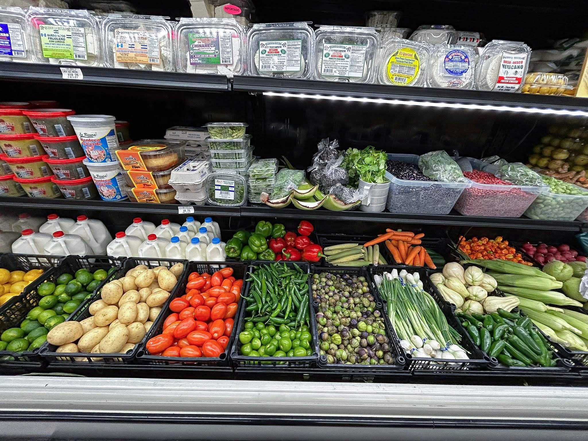
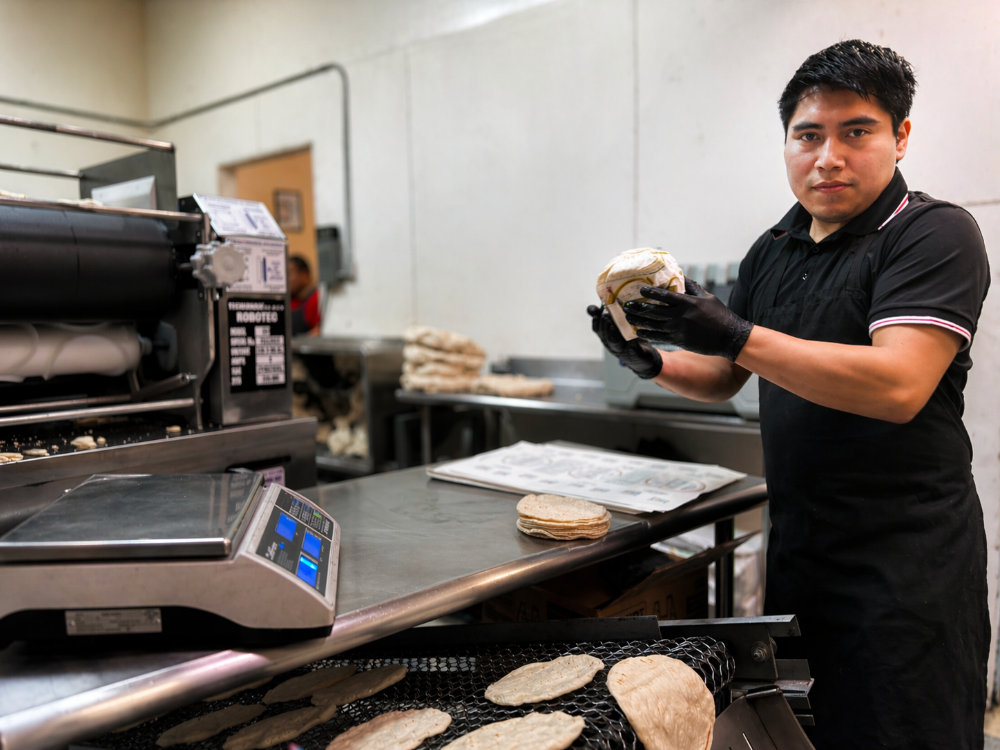
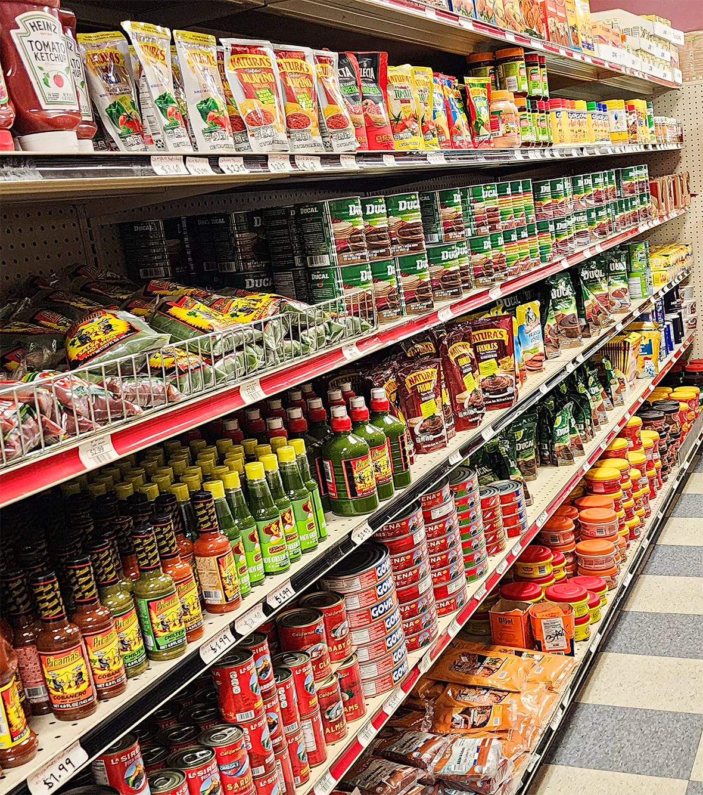

Mercado latino en Schuyler
Productos auténticos de Guatemala, México y Centroamérica.
Tu tienda latina en Schuyler, Nebraska
Supermercado latino en Schuyler, Nebraska con productos de Guatemala, México y Centroamérica para tu cocina. Encuentra carnicería fresca, panadería y tortillas hechas a mano, además de abarrotes y favoritos importados para tu día a día.
Lunes a Domingo: 8:00 AM – 9:00 PM
Productos auténticos de Guatemala, México y Centroamérica.
Cortes de calidad para tus comidas favoritas.
Hechas diariamente con sabor y tradición.
Variedad de productos que te hacen sentir como en casa.
En Tikal Market 4, ofrecemos una gran variedad de productos latinos incluyendo carnes frescas, pan dulce, tortillas hechas a mano y productos auténticos de Guatemala, México y Centroamérica.
Visítanos en Schuyler para encontrar calidad, sabor y tradición en un solo lugar.

Temporada, color y frescura para tu cocina: lo básico y lo difícil de encontrar.

Carne de res, cerdo, pollo y mariscos frescos todos los días.

Pan dulce, bolillos y pasteles para disfrutar en familia.

Tortillas de maíz y harina hechas a mano todos los días.

Variedad de productos de Guatemala, México y Centroamérica.

Envía dinero de forma rápida, segura y confiable con Intermex.

Antojitos y platillos caseros para llevar: rápido, rico y con sabor a hogar.

Queso fresco, crema y favoritos para acompañar tus comidas de todos los días.
PINULITO EN SCHUYLER
Pídelo para llevar o a domicilio. En esta ubicación puedes recibir Pinulito y también tu mandado (groceries) por DoorDash.
Estamos en Schuyler sobre B St, con fácil acceso y estacionamiento para que hagas tu mandado con comodidad.